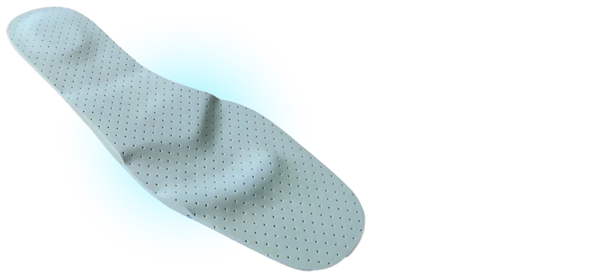
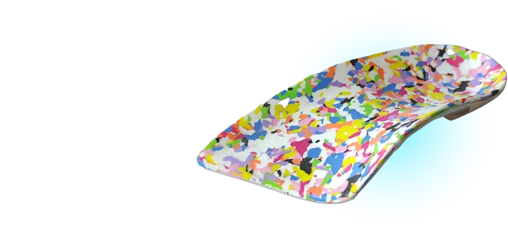
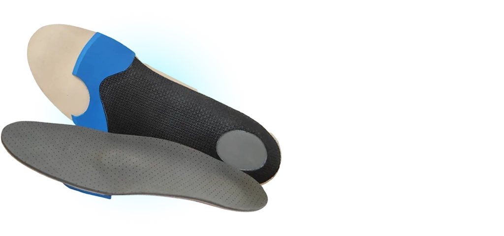
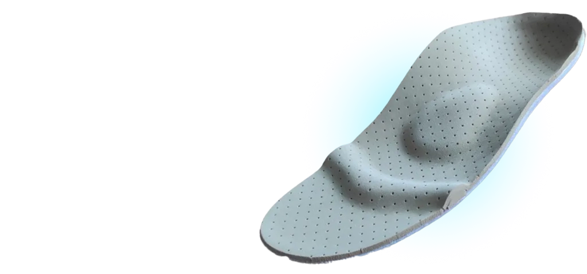

O curso de Palmilhas Terapêuticas é uma experiência completa para quem quer aprender a avaliar, prescrever e confeccionar palmilhas terapêuticas.
Dois dias intensos de teoria e muita prática de avaliação e confecção de palmilhas com diferentes técnicas de moldagem e configurações de elementos.
Confira aqui tudo o que você vai aprender sobre prescrição, confecção e aplicação de palmilhas terapêuticas:




Olá, meu nome é
Sou fisioterapeuta especialista em fisioterapia ortopédica com 20 anos de carreira. Sou mestre e doutorando em fisioterapia e autor do livro Palmilhas Terapêuticas: Ciência e Prática Clínica, sócio-criador da Podoshop® e do Palmilhando® com 15 anos de experiência na prescrição e confecção de palmilhas terapêuticas.
Selecione uma opção para ver detalhes sobre o local do evento